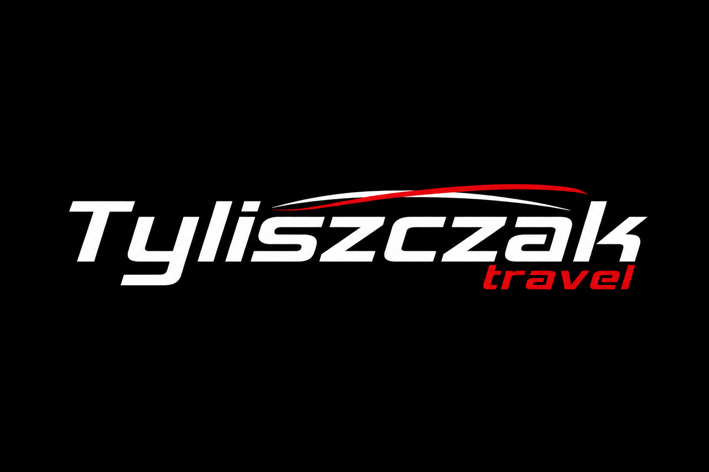
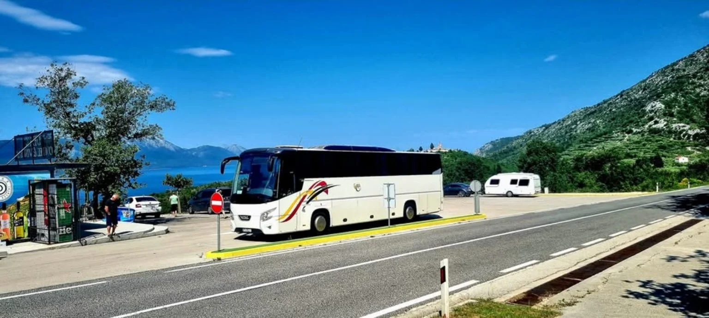

🚌
Wynajem autokarów i autobusów
Autokary dla grup różnej wielkości – na wyjazdy krajowe i zagraniczne.


Tyliszczak Travel oferuje wynajem autokarów, autobusów, busów i mikrobusów w Zielonej Górze, Świebodzinie, Sulechowie, Międzyrzeczu, Krośnie Odrzańskim, Gubinie i Sulęcinie – na wycieczki, przewozy pracownicze, pielgrzymki, wyjazdy integracyjne i transfery lotniskowe.
Obsługujemy zarówno pojedyncze przejazdy, jak i regularny transport dla firm oraz zorganizowanych grup.
Autokary dla grup różnej wielkości – na wyjazdy krajowe i zagraniczne.
Elastyczny transport dla mniejszych grup, wydarzeń i transferów.
Regularne przewozy pracowników z możliwością dopasowania trasy i godzin.
Transport dla szkół, biur podróży, grup zorganizowanych i klientów indywidualnych.
Przewozy na szkolenia, imprezy firmowe, konferencje i eventy.
Dowóz i odbiór grup z lotnisk oraz transport na dalszą część podróży.
Obsługujemy: Zieloną Górę, Świebodzin, Sulechów, Międzyrzecz, Krosno Odrzańskie, Gubin, Sulęcin oraz inne miejscowości. Zapewniamy transport dla grup, firm, szkół, wycieczek, pielgrzymek i wyjazdów okolicznościowych.
System obsługi tras dla stałych linii (dla kierowców).
Dostęp wkrótce